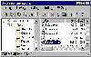

最近拿到一份《微软国际足球2000》，相当好玩，可就是太慢！一个数据文件竟然有170MB，偏偏每打一场比赛都要读它一次；本来我的四倍速“老爷光驱”就已“年老体衰”，如此大运动量还不要了它命？每每听着它呼哧呼哧的“喘”气声，我就担心它立马“老命不保”就此“鞠躬尽瘁”了。
不行，得作个硬盘版！找出Virtual
CDROM、Virtual DRIVE等虚拟光驱程序，都只能将整张光盘作成一个VCD（FCD）文件，那可是500多MB呀！别急，还有宝贝未登场呢：黄建华先生的VCDROM
Extension，这是一个虚拟光驱的扩展软件，可以将硬盘、光盘等各种介质上的任何文件、目录，有选择地制作成FCD或VCD格式的虚拟光盘文件。以下以《微软国际足球2000》为例，讲讲它的用法，对于别的光盘，读者朋友们只要如法炮制就行了！
首先去掉Help、Directx等用不着的东西，只将有用的数据部分Game文件夹作成虚拟光盘文件！可Game文件夹还有430MB！有了，片头动画、不怎么好听的背景音乐都可以不要，不就可以省下不少空间吗?好，就这样，开始！
“文件／新建”，输入“光盘”文件名：E:\If2000.vcd，“光盘”名缺省为DomeCD；“编辑／添加文件”，将光盘根目录下的文件添加到DomeCD的根目录中（Readme等几个文件完全可以不选）；“编辑／添加空目录”，目录名为Game，注意如直接添加目录Game，“光盘”DomeCD会很“肥”的哟！将光盘Game目录中的三个文件添加到DomeCD的Game中之后再“添加目录”，依次添加光盘Game文件夹中的Ability、Source、Custom、Save等几个文件夹，有关声音、动画的文件夹可别添加进去了，我们下面要对它们动“手术”。
在目录Game中添加空目录Frontend，将光盘Frontend目录中最小的动画文件Ms.avi（几百KB）添加进来；另外两个动画文件怎么办？偷梁换柱会吧，把Ms.avi拷贝两份到硬盘，分别改名为Intro.avi和Rage.avi再添加到目录Frontend中，两个“硕大”的家伙这不就变“苗条”了？同样的方法可以将其它不必要的声音文件用小文件、空文件或你喜欢的背景音乐文件代替。
至此，我们的“迷你光盘”就诞生了，在Virtual CDROM中“放进光盘”，选择最小化安装。安装后加上虚拟光盘文件也只有180多MB，相当“苗条”吧！
VCDROM Extension在Windows 95/98/NT4.0 操作系统下都可运行，对系统的软硬件无任何特别要求，还能对以前制作的光盘文件做一定程度的编辑修改，在FCD、VCD或ISO格式光盘文件进行转换等。有兴趣的朋友不妨到http://www.starinfo.net.cn/softdownload/action/hardcdrom.html去下载一份试试。
（湖北 张 洁） |